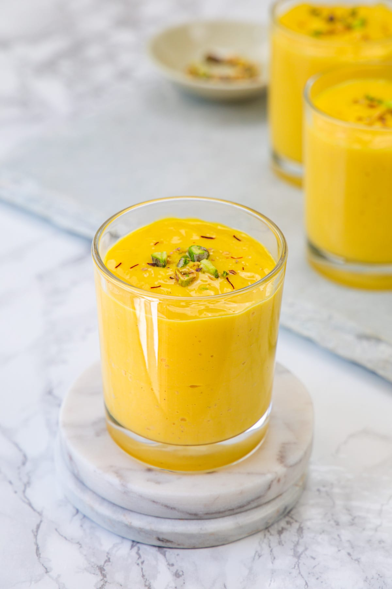

mango juice

સામગ્રી |
| દહીં: |
| .કેરી: |
| દૂધ |
| ખાંડ |
| કેસર |
| પિસ્તા |
બનાવવા ની રીત
1) બ્લેન્ડરમાં દહીં, દૂધ, સમારેલી કેરી, ખાંડ અને એલચી પાવડર લો.
2) તેને સ્મૂધ થાય ત્યાં સુધી બ્લેન્ડ કરો.
3)બ્લેન્ડરમાં ઘટકો અને તૈયાર કેરીની લસ્સી દર્શાવતી 2 છબીઓનો કોલાજ.
4) સર્વિંગ ગ્લાસમાં રેડો.
5) સમારેલા પિસ્તા અને કેસર વડે ગાર્નિશ કરો. તરત જ સર્વ કરો.